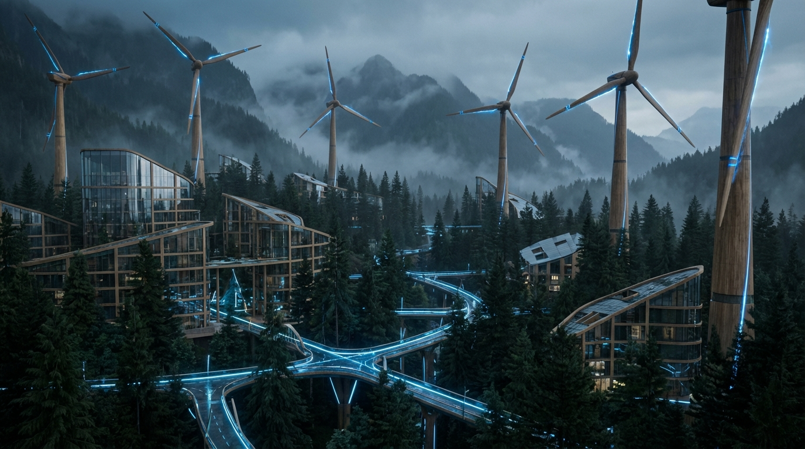

Skýjakot is a metropolis located in Gryning, Nordica. It is situated at an altitude of 1213m and is characterized by a Boreal or Alpine Forest climate.
Description
The 'Cloud House' built atop the Taiga canopy.
|
 

"Above the Clouds, Always Grounded"
| |
| Continent | Nordica |
|---|---|
| Country | Gryning |
| Type | Metropolis |
| Population | 1,250,000 |
| Altitude | 1213m |
| Climate | Boreal or Alpine Forest |
| Coordinates | [750, 400] |
Skýjakot is a metropolis located in Gryning, Nordica. It is situated at an altitude of 1213m and is characterized by a Boreal or Alpine Forest climate.
The 'Cloud House' built atop the Taiga canopy.